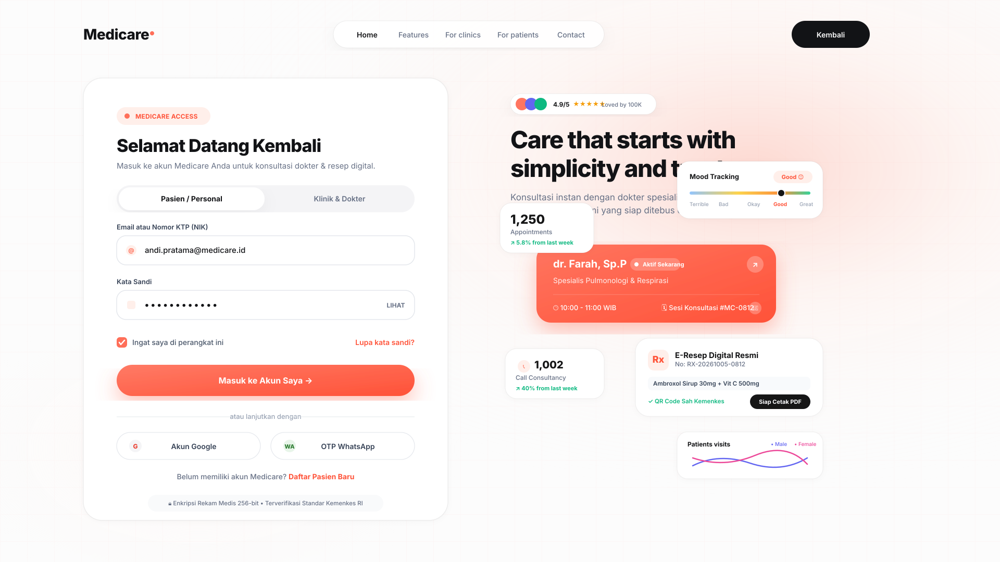

Desain vektor beresolusi tinggi (1920x1080) dengan color tone hijau tua & putih, siap diedit langsung setelah diunggah ke Canva Web.
Klik tombol "Unduh File SVG untuk Canva" di atas untuk menyimpan medicare-login-design.svg ke komputer Anda.
Buka canva.com, klik tombol "Unggah" / "Upload" di pojok kanan atas, lalu pilih file SVG tersebut.
Canva akan membuka desain dalam mode vektor: seluruh teks, warna hijau tua, radius sudut, dan layer dapat Anda ganti dan edit bebas.
